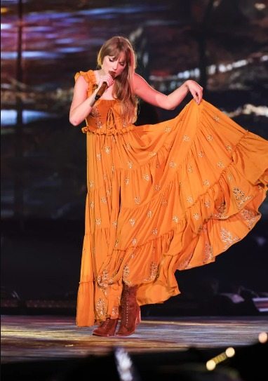

Explorando "evermore": Continuando a Jornada Musical de Taylor Swift
Lançado em 2020 como um presente surpresa para os fãs, "evermore" é uma extensão do mundo introspectivo e poético criado por Taylor Swift em seu álbum "Folklore".

O álbum "evermore" explora temas de nostalgia, amor, e narrativas vívidas. As músicas, como "willow" e "champagne problems," continuam a mergulhar os ouvintes em histórias emocionais e imaginativas.
A colaboração contínua com artistas como Bon Iver e Aaron Dessner trouxe uma profundidade adicional às músicas, complementando a sonoridade etérea do álbum.
Assim como "Folklore," "evermore" foi recebido com elogios por sua maturidade artística e abordagem inovadora. O álbum demonstra a versatilidade contínua de Taylor Swift como compositora e intérprete.
Com "evermore," Taylor Swift prova mais uma vez que sua capacidade de contar histórias e criar atmosferas emocionais únicas continua a cativar seus fãs e a indústria musical.